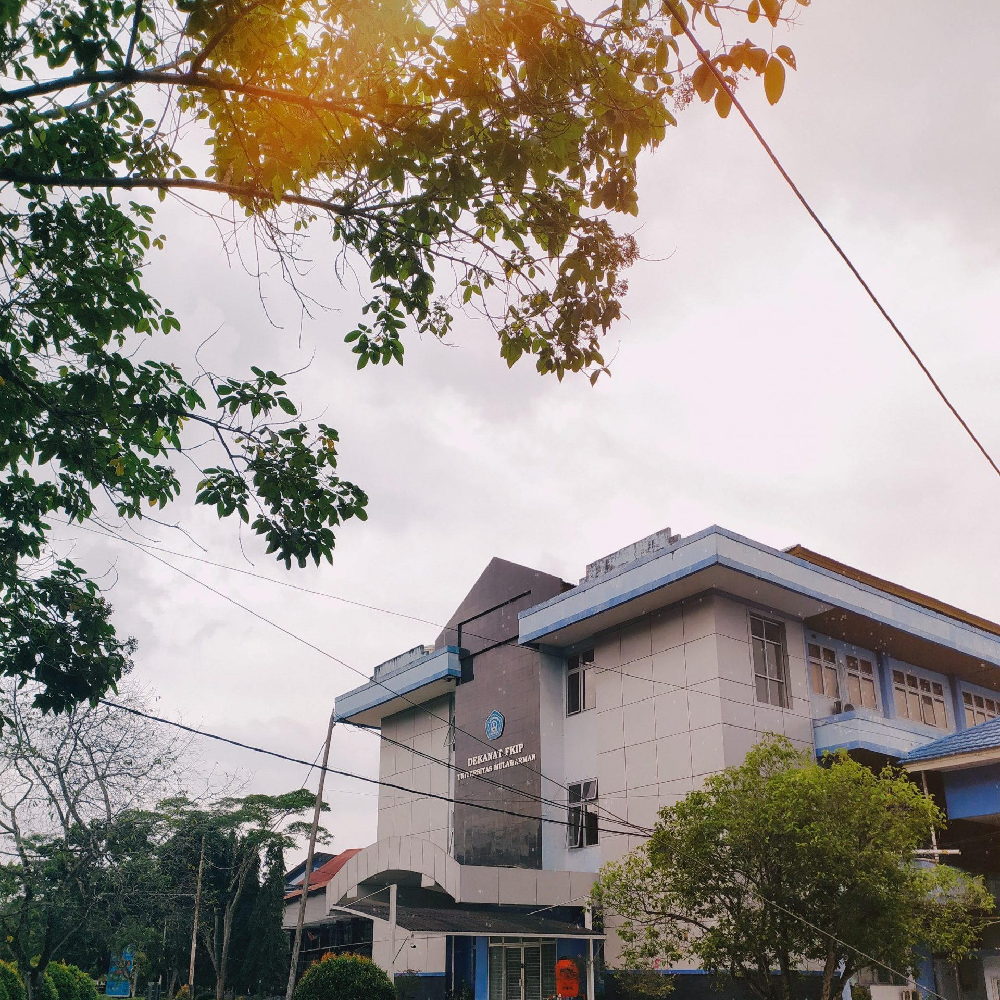
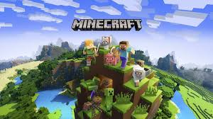
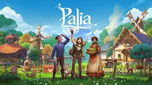
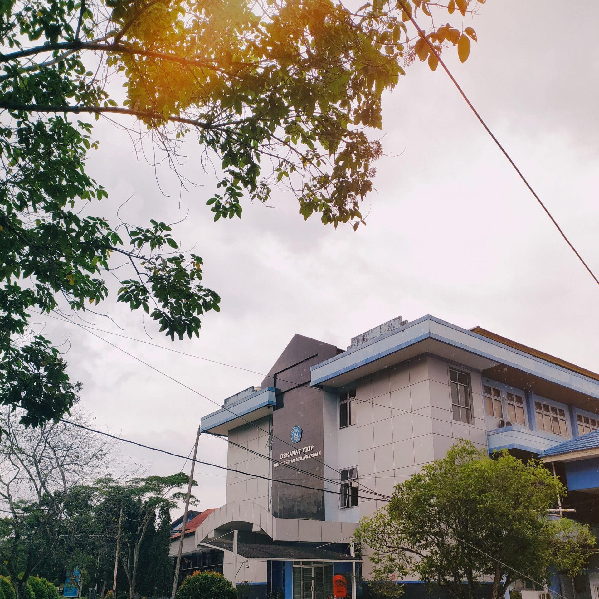
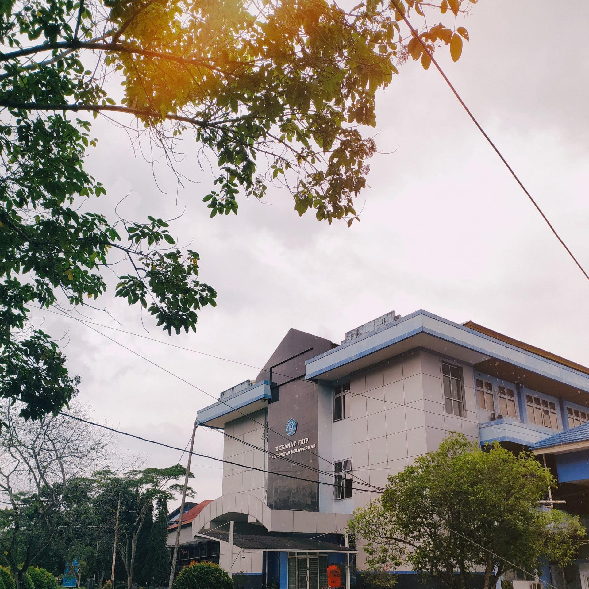

Halo saya Divia Ramdani Sukarman, seorang mahasiswi yang
berkuliah di universitas mulawarman, Fakultas keguruan dan ilmu
pendidikan (FKIP) dengan jurusan pendidikan komputer angkatan 2023 dan
saya semester 4. Saya lahir tanggal 28 oktober 2004 tahun ini umur
saya 21. Saya memiliki beberapa hobi yaitu membaca buku, mendengarkan
musik, dan bermain game.

BUKU YANG SUDAH SAYA BACA
Saya sering sekali menghabiskan waktu untuk membaca buku, meskipun
tidak pasti dalam sebulan apakah saya berhasil menyelesaikan berapa
buku. Namun sudah lumayan banyak buku yang sudah saya baca.
Beberapa buku yang sudah saya baca yaitu:
Selain buku yang saya berikan di gambar beberapa buku lain yaitu:
TABEL BUKU
No
Judul Lagu
Penulis
Penerbit
1
KATA
Rintik Sedu
Gagas Media
2
Mariposa
Luluk HF
Coconut Books
3
Pergi
Tere Liye
Republika penerbit
4
Dikta & Hukum
Dhia'an Farah
Asoka Aksara X Loveable
5
Sesuk
Tere Liye
Sabak Grip
6
Sebuah seni untuk bersikap bodo amat
Mark Manson
Gramedia
Namun karena sekarang teknologi sudah semaking canggih maka saya
sekarang juga kadang membaca buku secara online. Sudah banyak
platform yang menyediakan bacaan, contoh yang sering Saya gunakan adalah
ipusnas.
DESAIN POSTER
Kegiatan yang saya kerjakan selanjutnya adalah membuat poster,
sebenarnya bukan spesifik poster namun lebih ke mendasain/menggambar
karakter.
Beberapa gambar desain yang pernah saya buat:
Desain poster
Desain gambar logo jualan makanan tugas wirausaha SMA
Desain gambar random
LAGU FAVORIT
Karena memiliki hobi mendengarkan lagu saya sering sekali mendengarkan
musik di platform musik yaitu spotify
Spotify adalah Spotify adalah layanan streaming musik, podcast, dan
video digital yang dapat diakses melalui aplikasi. Spotify
menawarkan jutaan lagu, album, dan podcast dari berbagai musisi dan
kreator di seluruh dunia.
Spotify memiliki versi gratis, tetapi dengan beberapa batasan. Pengguna
versi gratis akan melihat dan mendengar iklan, serta tidak dapat
mengunduh daftar putar lagu untuk mendengarkannya secara offline.
Untuk mendapatkan fitur tambahan, pengguna dapat berlangganan Spotify
Premium. Fitur tambahan tersebut meliputi: Kualitas suara yang
lebih tinggi, Kemampuan untuk mendengarkan lagu tanpa koneksi internet,
Mendengarkan secara luring, Mendengarkan bebas komersial.
Artis Favorite saya adalah NIKI
Nicole Zefanya atau dipanggil NIKI merupakan seorang penyanyi, penulis
lagu, dan produser rekaman Indonesia yang bertanda tangan kontrak dengan
label rekaman 88rising. 88rising, dahulu dikenal sebagai CXSHXNLY,
adalah perusahaan musik asal Amerika Serikat yang digambarkan oleh salah
satu pendirinya, Sean Miyashiro sebagai "label rekaman, perusahaan
pemasaran, produksi video, dan manajemen hibrida".
Niki Termasuk penyanyi muda asal Indonesia yang berhasil menjalani karir
di go international.
Beberapa album Niki
Album Favorite saya yaitu
Dari beberapa album niki saya sangat menyukai album nicole, album ini
memiliki 12 lagu.
DAFTAR LAGU DALAM ALBUM NICOLE
Before
High School in Jakarta
Backburner
Keeping Tabs
The Apartment We Won't Share
Facebook Friends
Anaheim
Milk Teeth
Autumn
Oceans & Engines
On the Drive Home
Take a Chance with Me
Dari 12 lagu tersebut saya sangat menyukai lagu "take a chance with me"
GAME FAVORITE
Selain mendengarkan musik saya juga suka bermain game, namun game yang
saya sukai adalah game santai.
Game yang saya sukai dan sudah lumayan lama memainkannya yaitu:


untuk beberapa game play atau tutorial bermain minecraft dan palia
silahkan clik dibawah ini:
Film elemental adalah film yang bercerita tentang dunia yang
penghuninya merupakan beberapa elemen antropomorfik alam,
seperti air, api, udara, dan juga tanah.
Film Luca
Film Luca menceritakan tentang petualangan seorang anak laki-laki
bernama Luca yang merupakan monster laut, tetapi menyamar
sebagai manusia.
Film Turning Red
Turning Red adalah film animasi Disney dan Pixar yang menceritakan
seorang remaja perempuan bernama Mei Lee yang berubah menjadi
panda merah raksasa saat emosinya meledak.


 
